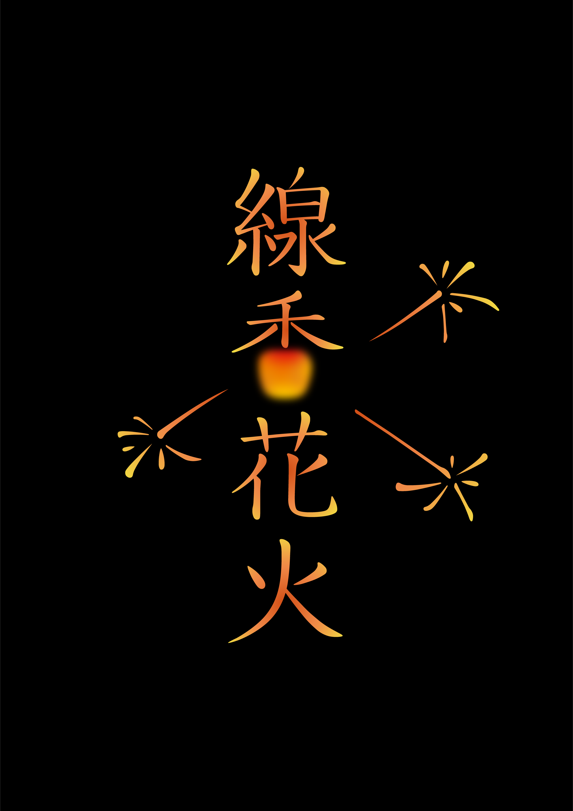
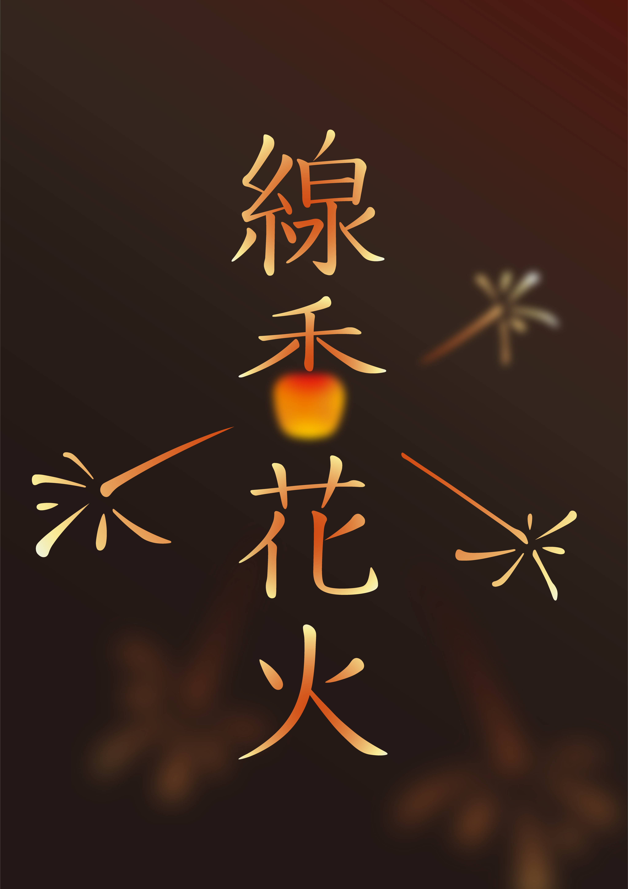

作品名
2021.1.1
制作環境 illustrator
漢字とタイポグラフィで「線香花火」をテーマにデザインした。 「香」の下部分を線香の玉に見たて、漢字のエレメントで飛び散る火を表現した。 線香花火らしさが伝わるよう飛び散る火に遠近感を持たせグラデーションを用いた。
制作過程


漢字とタイポグラフィで「線香花火」をテーマにデザインした。 「香」の下部分を線香の玉に見たて、漢字のエレメントで飛び散る火を表現した。 線香花火らしさが伝わるよう飛び散る火に遠近感を持たせグラデーションを用いた。